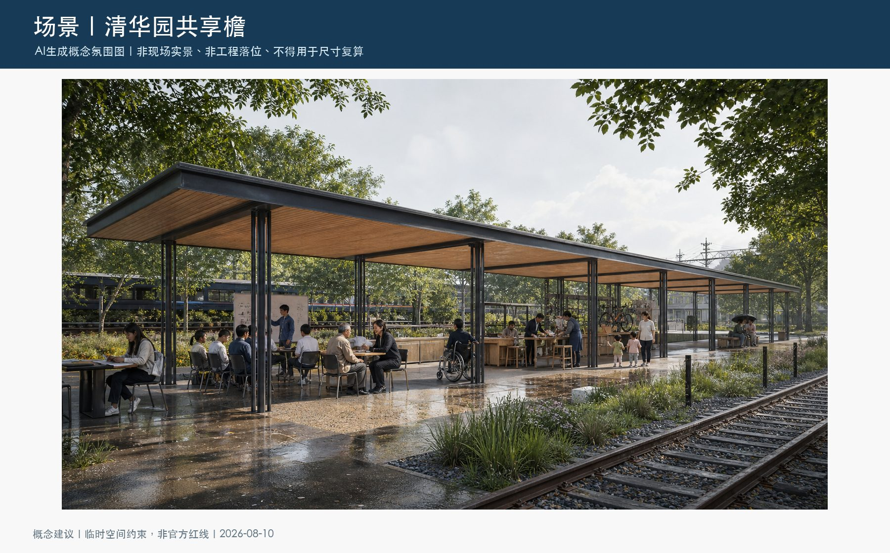
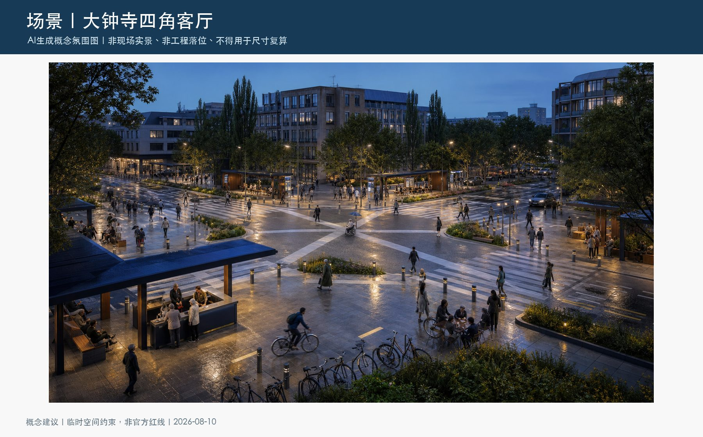

总览地图｜重点区域｜用地分区｜交通慢行｜蓝绿公共空间｜更新项目｜AI 场景｜核心指标｜任务覆盖
总体概念与地方基因

三层范围与空间结构

三区与三座地标

日常服务与慢行蓝绿

全项目差异化证据

旗舰一：清华园共享檐

共享檐：人尺度概念场景

旗舰二：大钟寺四角客厅

四角客厅：人尺度概念场景

自检状态
全量自检已通过：确定性、空间、视觉与专业证据检查均可运行。临时边界警示仍保留，并将在官方几何到位后整包复算。
来源与假设
公告、海淀分区规划、园林绿化规划、城市更新指引、公开项目资料、五个国际案例与309项公开投稿目录均记录于 sources.json。
正式边界、控规、文保、现状建筑、交通市政和权属仍待补；详见 assumptions.json。